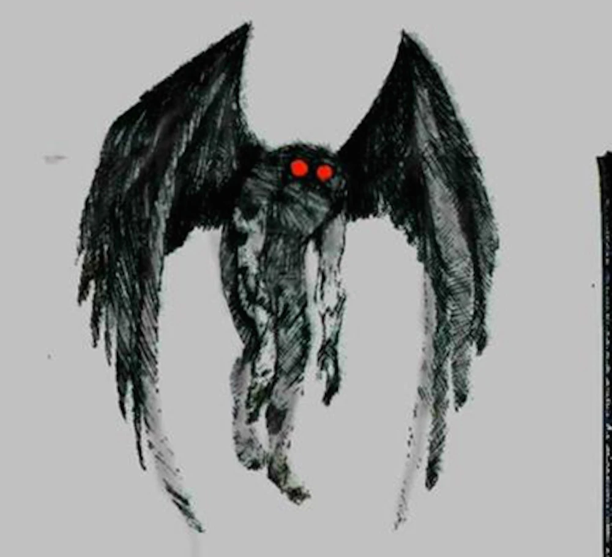

AN ORIGINAL SHORT STORY / POINT PLEASANT, WEST VIRGINIA
When Maya arrived in Point Pleasant, the Ohio River was hidden by a low gray mist. She was there to analyze old reports of a winged figure said to have appeared near the town in 1966. The local museum displayed newspaper pages, maps, and a model with bright red eyes. Each source told the story from a different perspective. The legend grew in the years around the 1967 Silver Bridge collapse, a real tragedy; no evidence connects the Mothman to the disaster.
One witness remembered a shape above a road. Another described a strange sound in the night. Their accounts had similarities, but the details changed with each retelling. Maya wrote down what each person had actually seen, then separated those memories from later rumors. The difference mattered: a confident voice could not guarantee credibility, and a vivid description was not the same as physical evidence.
At the library, she read old news stories. Some headlines treated the creature as a proven fact; others dismissed witnesses as foolish. Both choices shaped its representation. Maya did not want to turn local residents into a stereotype of gullible people; their questions were part of the town’s history too. She noticed an assumption hiding in one article: because several people reported something unusual, the same explanation must be correct. That was a fallacy—the reports deserved attention, but they did not prove what caused them.
At dusk, Maya stood beside the river and listened to the reeds move in the wind. She did not laugh at the town’s beliefs. Legends can carry memory, identity, and a community’s questions. But ideology and fear can also influence what people notice and repeat. She tried to stay objective: perhaps people had seen a bird, a shadow, or something they could not identify.
Before leaving, Maya looked again at the newspaper photograph. The image seemed less like an answer than an invitation. A story may tell us as much about the people who share it as about the mystery itself. She closed her notebook with one final question: what do we know, what do we believe, and what are we still only guessing?
THINK ABOUT IT
- Can eyewitness accounts always be trusted?
- How can media influence our beliefs?
- What is the difference between evidence and assumption?
Story vocabulary / simple definitions
Analyze: to study something carefully.
Assumption: an idea accepted as true without proof.
Beliefs: ideas that a person or group accepts as true.
Credibility: how believable or trustworthy something is.
Evidence: information that helps show what is true.
Fallacy: an error in reasoning.
Ideology: a set of ideas that shapes how someone sees society.
News: reports about recent events.
Objective: based on facts rather than personal feelings.
Perspective: a particular way of seeing something.
Representation: the way a person or thing is shown or described.
Similarities: features that are alike.
Source: where information comes from.
Stereotype: a fixed, oversimplified idea about a group.